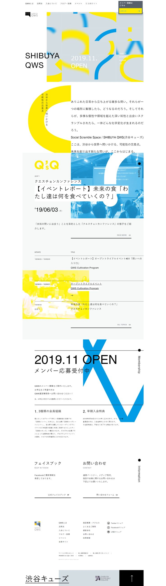

Design Prompt Archive
>
ミニマルなポートフォリオLP
ミニマルなポートフォリオLP
1ページ構成のミニマルなポートフォリオサイト。大きなヒーローと3つのプロジェクトカードで、シンプルに実績を見せるレイアウトです。
Web / Landing Page
Minimal / Light
想定ツール: Figma + 画像生成AI
一覧に戻る
デザインプレビュー

AIプロンプト
画像生成用
コード生成用
コピー
プロンプトを編集する（新しいタブ）